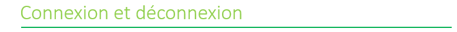
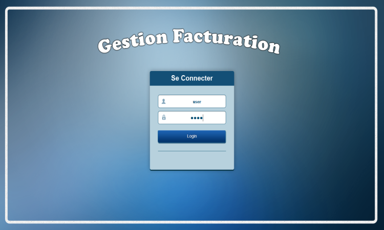

Pour se connecter, il faut saisir le nom d'utilisateur, le mot de passe puis cliquer sur login.

Pour se déconnecter, il suffit de cliquer sur l'icon 'Déconnextion' du menu principal.
Mot de passe oublié:
En cas du mot de passe oublié if faut consulter l'administrateur.